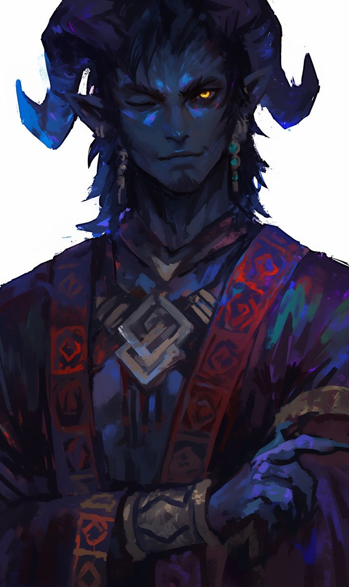
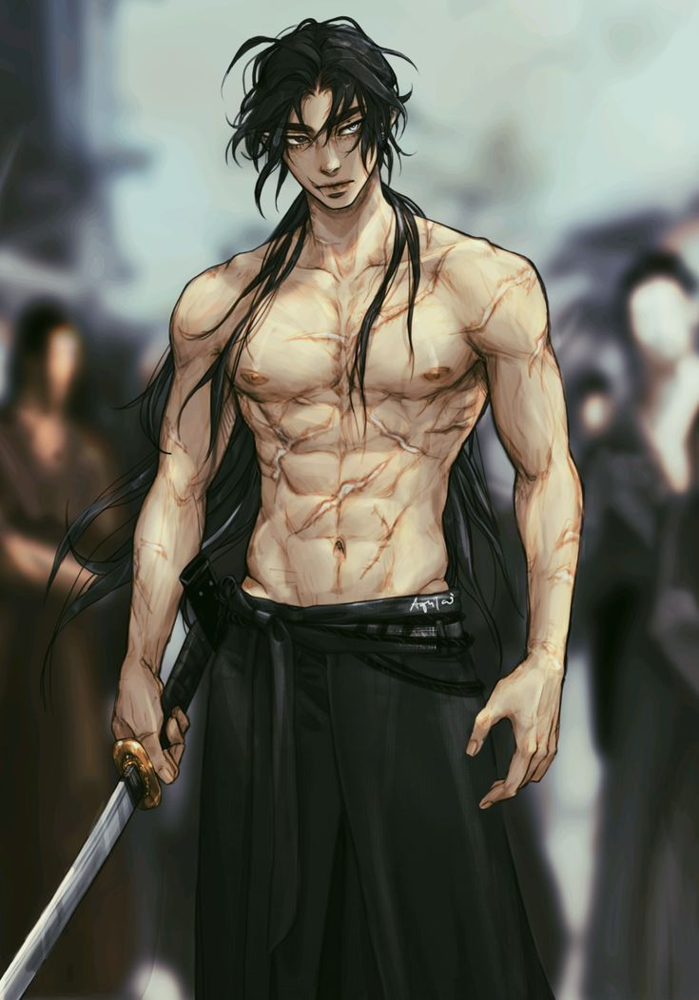
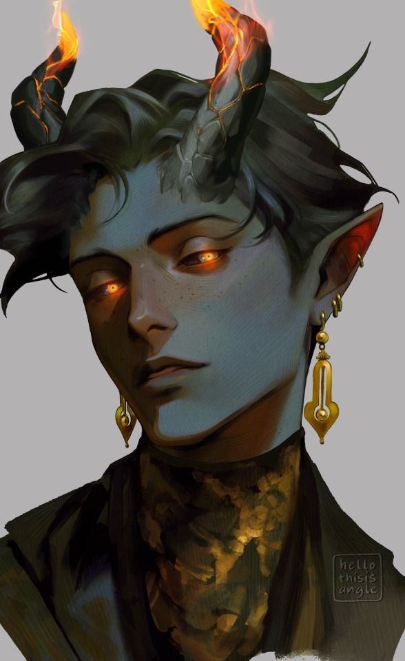

Vicius Moterafh
-73 anos, um Jovem nascido em sylvaris.
Mãe: Malécia, Pai: Lúciel, ambos mortos.
✦ Vicius é obcecado no destino, para ele todos tem uma história já traçada, um caminho do qual não podem desviar, e caso o façam, ele irá os punir.
Vicius está acima de tudo a procura de sua irmã anyssa.
Vicius tem vontade de conhecer mais sobre Azai Kagekatsu, a lenda que viveu ao lado de seu avô.
Vicius é perspicaz e é rato em se encaixar em qualquer lugar, eloquente, malicioso, charlatão, atrevido e em alguns momentos raros, aproveitador. Mas quando o assunto é sua fé ele se devota até o fim.
Uma das vontades secundárias do Vicius, se o destino permitir, é se tornar o primeiro infernis a ser rei de um continente. Para fuder muitas putas de graça e decapitar os racistas.

Há muitos muitos anos 250 aproximadamente, um grupo de infernis se nomearam de Kanshu. E se uniram em prol de uma vida sem preconceito. de uma vida livre, em um lugar em que pudessem finalmente se sentirem confortáveis. Juntos criaram uma comunidade em sylvaris que aos poucos e com o passar dos anos ganhou seu espaço nesse continente.
O líder dessa comunidade, um infernis muito muito idoso com cerca de 300 anos ( o avô de lucius, tylon), era um devoto há uma crença, a crença da existência do destino, de um caminho escrito, um fio sagrado na ordem do cosmos. Essa devoção inspirou a comunidade a ter algo a acreditar, o avô dizia que essa crença vem de um homem que ele conheceu e que morreu a muitos anos atrás, esse homem se chamava Azai Kagekatsu, um humano que viveu há mais de 260 anos atrás em kozui e que viveu uma vida de honra e até o fim, acreditando na fé do destino. tylon dizia que nunca entendeu esse humano, nem depois de sua morte, mas disse que esse foi o único homem que ele conheceu que nunca o olhou sem nenhum preconceito. A comunidade adotou a fé no destino.

Azai KagekatsuVicius nasceu e 20 anos depois sua irmã anyssa nasceu. Vicius durante 20 anos sempre foi um jovem perspicaz e não levava quase nada a sério, há ponto de ter diversas esposas em sylvaris, porém com o nascimento de sua irmã ele começou a tomar mais rumo na vida e se motivou a se tornar um exemplo para anyssa. Ele fazia idas nas bibliotecas de magia de sylvaris e tentava entender magias e escritas para que pudesse ensinar anyssa a ler e se defender. Por 20 anos vicius fez isso.

AnyssaAté que um dia, uma doença rara estava matando seu avô, e Vicius saiu a procura de uma cura e se juntou em uma vida ao lado de piratas por 2 anos para conseguir transporte para outros lugares que pudessem ter a cura, porém sempre mantendo uma outra identidade e visual falso (a identidade de um humano de cabelo prateado com uma marca no olho esquerdo, com codinome de “cicatriz”), com sua magia e ao lado de seu amigo (boneco do fiders) que não faz ideia de sua identidade original.
E em determinado momento nossa rota se separou devido a destruição do navio causada por um monstro que ambos desconhecem, Vicius retornou para sua comunidade em uma pequena jangada, ao retornar encontrou o cadáver de todos os Kanshu que foram declarados como traidores de sylvaris por conspiração. Vicius encontrou também seu avô sem mais os sintomas da doença porém morto por suicídio, por desgosto de uma traição. Sua irmã anyssa não estava mais lá. e um dos Kanshu deixou um bilhete escondido para vicius dizendo que anyssa fez um acordo com pessoas que prometeram a cura porém em troca da vida dos demais Kanshu, ela foi intitulada líder da comunidade devido a doença do avô, e com o poder político dela ela forjou que sua comunidade estaria tramando um golpe político, com isso todos foram mortos sem nem saber o porquê e anyssa se encontra desaparecida.
Vicius pegou um item de cada um dos Kanshu. E jurou a si e a todos nunca se desviará do destino, manterá tudo como foi escrito, punirá aqueles que desviem do caminho sagrado. E caso ele mesmo se desvie do caminho, seja por benevolência, covardia ou compaixão, que os céus o punam.